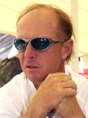
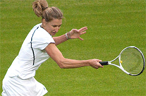
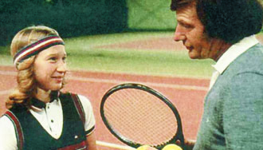
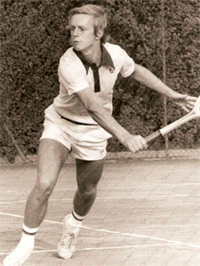
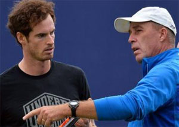

Previous: Constructing the Kick | 🏠 Classic Lessons Home | Next: Develop the Ideal Ball Toss Height
Invisible Greatness: Desire and Discipline
Comprehensive unified tennis knowledge base — Fundamentals, Stroke Analysis, Reference Library, and more
Invisible Greatness:Desire and Discipline
Nate Chura
The further I dove into my research, the more I began to wonder what some of the invisible ingredients are that motivate players to work so hard and sacrifice so much to achieve their goals? (Click Here for Part 1 in this series. Click Here for Part 2.)

What did Pavel Slozil say about invisible greatness at his birthday party?
What leads to that fiery desire that JoAnne Russell talked about at Pavel Slozil's birthday party? What did Pavel himself think?
Slozil, who was a member of the 1980 Czech Davis Cup champion team, coached Steffi Graf during her prime, when she won the "Golden Slam" in 1988 (all four majors, plus Olympic gold). Considered by many tennis experts to be the greatest women's singles champ of all time, Graf won 22 major singles titles and was ranked no. 1 in the world for a record 377 total weeks.
"Only the strongest people can work to their maximum, maybe, fifteen, twenty days out of thirty," says Slozil. "Steffi was every day, really every day. In five years, she never disappointed me."
What motivated her?
"First," Slozil answered, "she loved to play tennis. Even though, from the start, it was a business decision, to make money, for sure.
"I asked Peter Graf one day, 'How is it possible she plays every day so hard and she's really loving it? Even if she's upset, she still loves to play?'

What made Steffi so very strong?
Peter said, "Many times I have played a little game with her. I said, Steffi, you don't play today, and she really wanted to so badly."
Pavel acknowledged that somehow Steffi was different. "Speaking for myself, Saturday and Sunday I sat down, watched TV. My body hurt. But the following week I had to perform."
"Steffi couldn't stand to not perform or not play so much energy! So much love of the sport."
This seems to be a common refrain. Champions push themselves to the limit and make all sorts of sacrifices because they love the sport profoundly. But love can be a feeling you forget as the years (and miles) pile on, as Graf's husband Andre Agassi knows too well. It's hard to keep up the romance when your body is getting battered by your lover.
Visible Discipline
When Slozil's old friend, and former Davis Cup teammate, Ivan Lendl took over coaching Andy Murray, the team addressed this same issue of love of the game head on. Lendl referred the Scot to sports psychologist Alexis Castorri.

From the beginning, Steffi had to play.
"When I looked at early films of Andy playing," Castorri told the Daily Telegraph, "he played with such happiness and excitement. My initial thought when I worked with him was that he needed to bring back the zest.
"But I believe you start that off the court. Andy is a creative genius, a tactical and technical genius, so he needed to reconnect with his inner strengths. It's natural that when someone puts their heart and soul into what they're doing, they sometimes forget how much enjoyment they once took from it.
"Andy has lofty goals and is hard on himself. You need to remember that you love the battle, that's why you are out there."
On paper, Murray and Graf differ in many ways: their gender, temperament, backhands, and so on. But one thing they share in common is their perfectionism, an invisible characteristic shared by all of the best players I have studied. Not perfectionism to the degree of never missing a shot or losing a point, but perfectionism in terms of achieving their grand goals.

Pavel as a player: being in the top 35 is close to being number one - but not really.
Stozil phrased it this way: "I was a pretty good player, top thirty-five in singles, won a lot of tournaments, but I was never so close to number one or two, not even in doubles.
Close But Not Really Close
"You're close, but not really close. Those players are completely different characters. Personalities are different than ours. We are happy with little things. They are not happy with little things.
"If they lose Wimbledon final, they are unhappy. You would be happy to win two rounds at Wimbledon. Losing in final at Wimbledon, let's say, seven-five in the third against Navratilova, was disaster."
What Slozil and Lendl were able to pass along to their pupils was the emotional discipline they needed to achieve their goals. I got this same message from Lendl himself.
Most experts believe Lendl didn't tell Murray anything different than what all his previous coaches had told him a million times before, namely be more aggressive, but his attention to detail, confidence, and emotional restraint were second to none. And he recently proved that on his second tenure with Andy - the 2016 Wimbledon champion.
"Ivan Lendl never smiled when he was watching Murray play," Mark Hodgkinson wrote in his biography Andy Murray Wimbledon Champion. "It was something he had copied from his parents; they had never shown any emotion as spectators. 'Smiling is overrated,' he said."
Maybe Lendl did not have the choice, perhaps he was no longer even physically capable of smiling while tennis was being played. This much was clear: Lendl's unmoving, unsmiling face had a calming effect on Murray.

Lendl helped Andy achieve his own kind of emotional discipline.
When Lendl was around, Murray was much better at controlling his emotions. What would have happened, you wondered, if Murray had ever dared to scream at Lendl in the same way he used to tear into Brad Gilbert?
"I really wouldn't recommend that he ever does that," Boris Becker said.
"Ivan is so pokerfaced, so stoic and he never claps," observed Chris Evert. "Ivan's intense, but in a low-key way. Andy used to get so down on himself, and that was having an impact on his tennis.
"Ivan has stopped that. Ivan keeps Andy mentally balanced. If Andy plays a good shot and looks over at Ivan at the side of the court, Ivan looks back in a way that says, 'Okay, but keep going.' If Andy is down, Ivan is saying to him, 'You can get out of this.' Ivan's message to Andy is. 'Don't get so heated or emotional – just chill."
Speaking of Evert, I went to Boca Raton, Florida to complete my Dartfish training and master yet another invaluable element of the invisible game – video and match analysis.
What did Evert Academy men's director of tennis Reginald Moralejo say about the warm up?
Invisible Warm Up
While there I had the good fortune of meeting Reginaldo Moralejo, the director of the men's program. Moralejo caught my attention with a comment on the warm up.
"I believe the way players warm up is the way they're gonna play the rest of the day," says Moralejo. "It's extremely important to put a lot of care into the warmup, because you cannot easily change from playing bad to playing good.
"That's something that professionals do. There has to be a perfect routine and progression and, little by little, I achieve this step: Okay, I'm feeling the ball, I'm feeling the ball...Okay. Now I'm able to place it deep. I'm not missing it deep. Little by little, I start to increase speed.
"You cannot skip any step. The moment you skip any steps, it's gonna hurt you in the next thirty minutes. Your full focus has to be on the first second and the maximum amount of focus has to be in the first fifteen minutes.
"If you achieve that, then you just go with the flow and it's easy to carry your momentum. But if you struggle the first fifteen minutes, it might take two hours and you're still not playing at your level." There is an invisible factor that most people watching matches on TV don't see.
Invisible desire. Invisible emotional discipline. Invisible differences in the warmup. The possible contributing factors to greatness continue to build.
And what about practice? What are the invisible factors there? Stay tuned!
Nate Chura is a New York tennis pro, writer, and speaker. He is the director of tennis at Onteora Club and head tennis professional at The Heights Casino in Brooklyn, NY. He is a graduate of Emerson College in Boston, MA, a USPTA Elite certified tennis coach, and certified Dartfish technician. His first novel, The Man in the Barn: Digging Up Lincoln's Killer, was released on the 150th anniversary of John Wilkes Booth's death.
Source: tennisplayer.net archive — Desire and Discipline.docx (John Yandell teaching library, 2002-2022). Extracted and rendered as HTML for Tennis Future Lab.